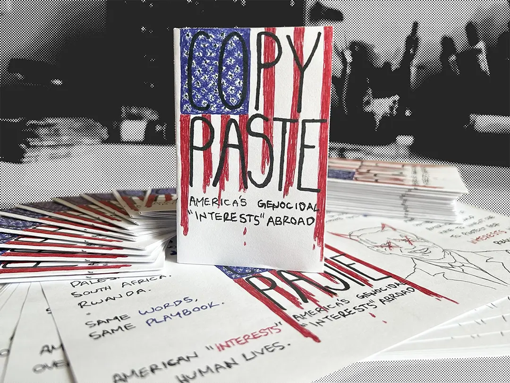
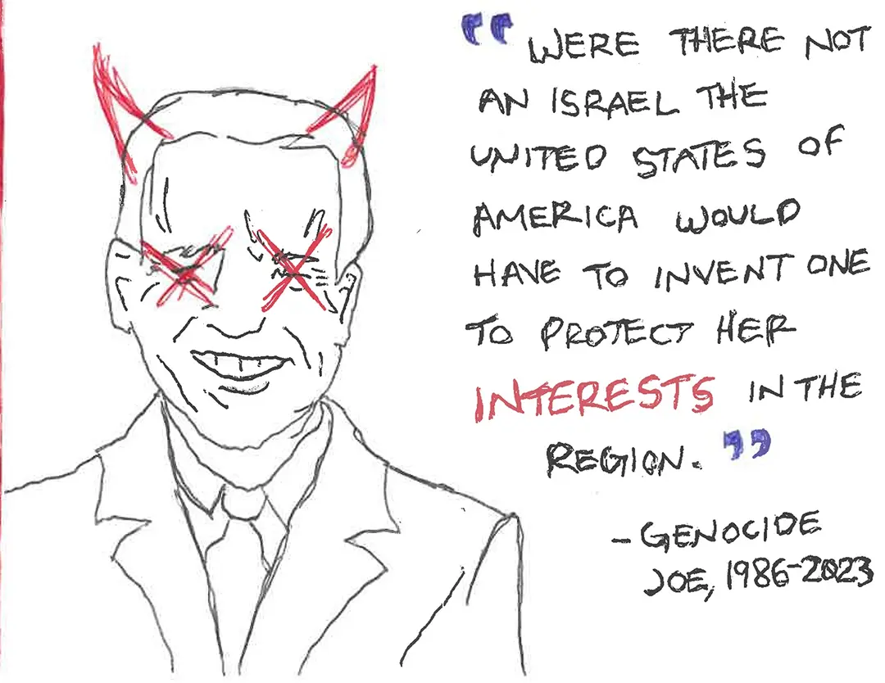
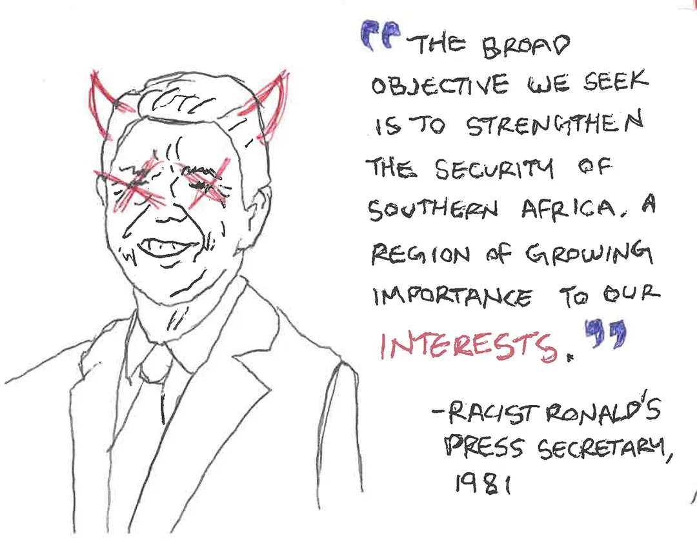
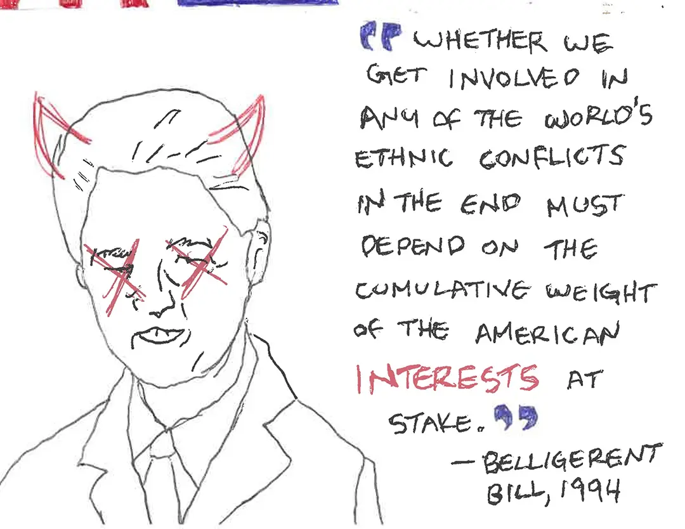
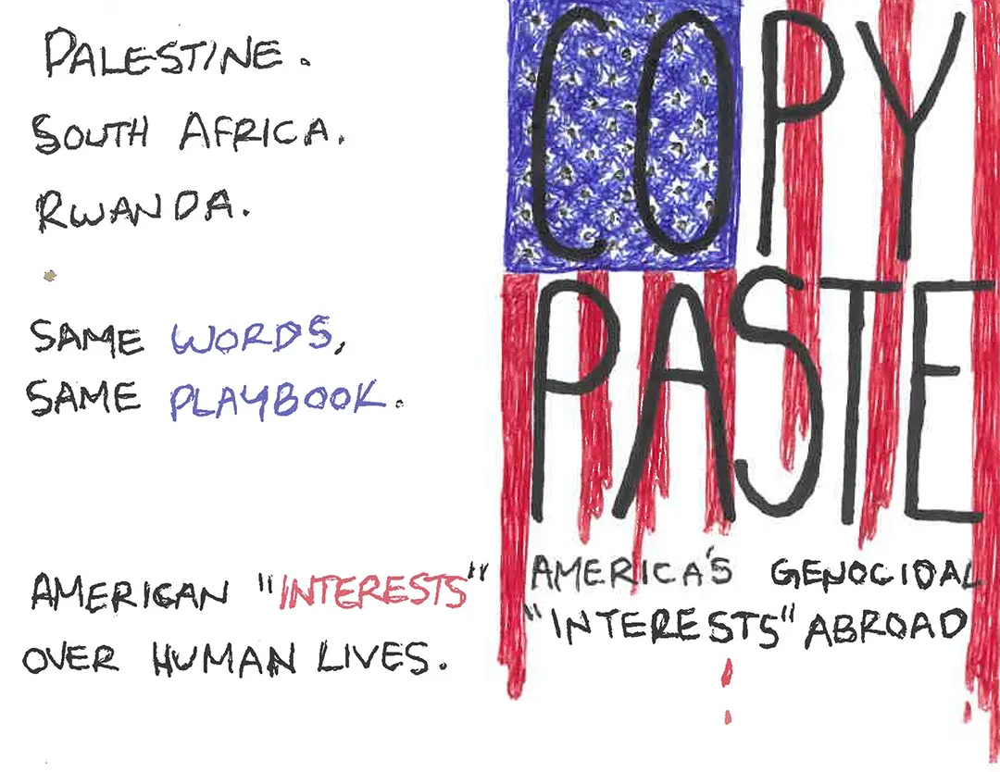

COPY PASTE
America's Genocidal
"Interests" Abroad

"Were there not an Israel the United States of America would have to invent one to protect her
interests in the region."
—Genocide Joe, 1986-2023

"The broad objective we seek is to strengthen the security of Southern Africa, a region of growing
importance to our interests."
—Racist Ronald's Press Secretary, 1981

"Whether we get involved in any of the world's ethnic conflicts in the end must depend
on the cumulative weight of the American interests at stake."
—Belligerent Bill, 1994


Palestine. South Africa. Rwanda.
Same words, Same playbook.
American "interests" over human lives.
Download a printable copy of the zine
Created on company time with company dime, November 2023